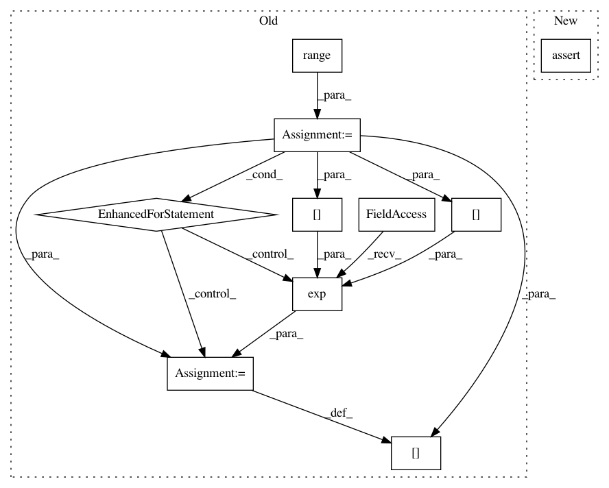

d1d8284dd21afef5f5cc3e0b98f67a9dab4d57cd,tests/test_hypersphere_tensorflow.py,TestHypersphereOnTensorFlow,test_exp_vectorization,#TestHypersphereOnTensorFlow#,171
Before Change
gs.testing.assert_allclose(result.shape, (n_samples, dim))
expected = gs.zeros((n_samples, dim))
for i in range(n_samples):
expected[i] = self.metric.exp(n_tangent_vecs[i], n_base_points[i])
expected = helper.to_vector(expected)
gs.testing.assert_allclose(result, expected)
def test_log_vectorization(self):
After Change
result = self.metric.exp(one_tangent_vec, n_base_points)
point_numpy = np.random.uniform(size=(n_samples, dim))
with self.test_session():
self.assertShapeEqual(point_numpy, result)
n_tangent_vecs = self.space.projection_to_tangent_space(
n_vecs, base_point=n_base_points)
result = self.metric.exp(n_tangent_vecs, n_base_points)
In pattern: SUPERPATTERN
Frequency: 3
Non-data size: 10
Instances
Project Name: geomstats/geomstats
Commit Name: d1d8284dd21afef5f5cc3e0b98f67a9dab4d57cd
Time: 2018-09-12
Author: ninamio78@gmail.com
File Name: tests/test_hypersphere_tensorflow.py
Class Name: TestHypersphereOnTensorFlow
Method Name: test_exp_vectorization
Project Name: geomstats/geomstats
Commit Name: 26138c45ee77d508abb928e8adc6a77aa2e9d149
Time: 2018-09-14
Author: ninamio78@gmail.com
File Name: tests/test_hypersphere_tensorflow.py
Class Name: TestHypersphereOnTensorFlow
Method Name: test_exp_vectorization
Project Name: geomstats/geomstats
Commit Name: 274b1c4436c7f4edf92973e2f1668d95aa2207cb
Time: 2018-12-28
Author: ninamio78@gmail.com
File Name: tests/test_discretized_curves_space.py
Class Name: TestDiscretizedCurvesSpaceMethods
Method Name: test_l2_metric_exp_vectorization